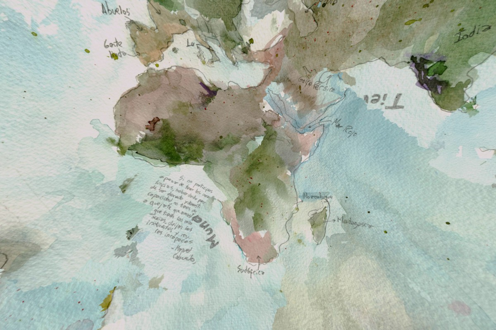
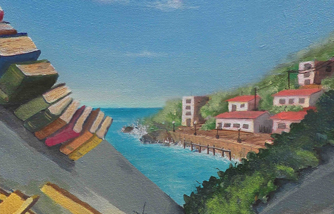
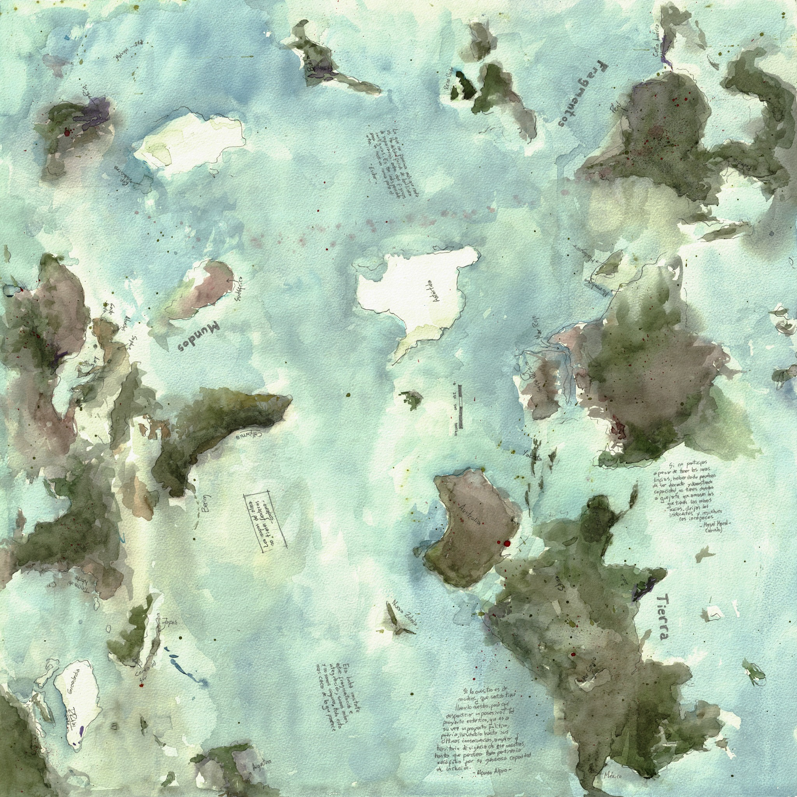
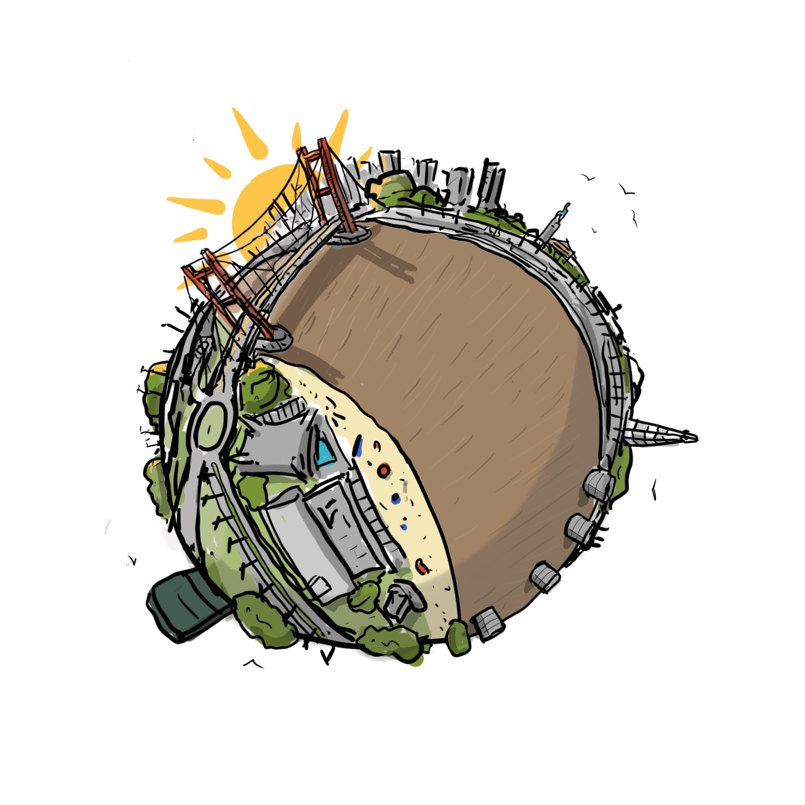
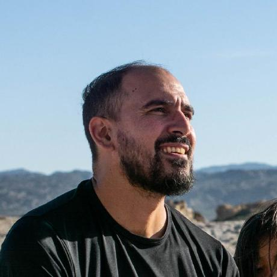

01RECORRIDO 360°
Mapamundi
Experiencia panorámica interactiva en 360°. Un recorrido visual inmersivo navegable desde computadora, tablet o teléfono.
EXPERIENCIAS DIGITALES
Un espacio para reunir obras, recorridos y experiencias interactivas.
Explorar proyectosPROYECTOS

01RECORRIDO 360°
Experiencia panorámica interactiva en 360°. Un recorrido visual inmersivo navegable desde computadora, tablet o teléfono.

02RECORRIDO 360°
Una pieza inmersiva pensada para ser recorrida desde el navegador, explorando imagen, espacio y punto de vista.

03REALIDAD AUMENTADA
Una obra tridimensional que puede activarse desde el teléfono y situarse en el espacio real para recorrerla e interactuar con ella.

04 NUEVOOBRA GENERATIVA · REALIDAD AUMENTADA
Elegí una pieza, modificá su escala y profundidad y construí tu propio mosaico sobre una pared o el piso. Cada composición es única.

QUIÉN SOY
Soy arquitecto, artista visual y docente. Mi trabajo cruza arte, territorio, representación y tecnologías digitales, explorando formas de construir experiencias espaciales e interactivas a partir de imágenes, cartografías, modelos y entornos inmersivos.
Arte Digital reúne una serie abierta de experimentaciones entre dibujo, realidad aumentada, recorridos 360°, visualización y espacio.
robles@curdiur-conicet.gob.ar ↗